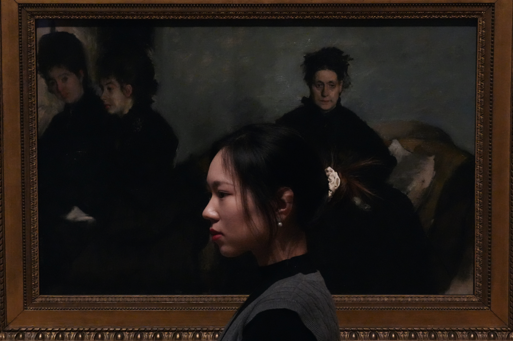

Welcome, dear friends, to my web
Where twinkling ideas are softly bred
Do not focus on who I am
but how the human-centered designs reside
From snowy town where mountains soar
To the city with a modern roar
A seeker of stories, both grand and small
I watch as the world unravels its call
Thinking how we connect to people, lives
And all
Feel free to explore more
I am glad to meet you somehow
